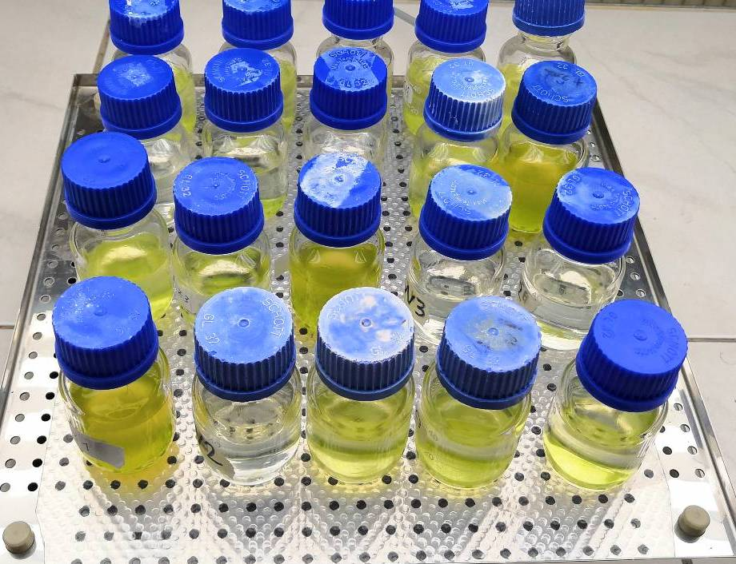

| treat | replicate 1 | replicate 2 | replicate 3 |
|---|---|---|---|
| Fertilizer | 0.020 | -0.217 | -0.273 |
| F. open | 0.940 | 0.780 | 0.555 |
| F.+sugar | 0.188 | -0.100 | 0.020 |
| F.+CaCO3 | 0.245 | 0.236 | 0.456 |
| Bas.med. | 0.699 | 0.727 | 0.656 |
| A.dest | -0.010 | 0.000 | -0.010 |
| Tap water | 0.030 | -0.070 | NA |
07-ANOVA und ANCOVA
Applied Statistics – A Practical Course
Thomas Petzoldt
2025-10-15
Achtung: deutsche Übersetzung muss noch geprüft werden
ANOVA - Analyse der Varianzen
- Prüfung komplexer Hypothesen als Ganzes, z.B.:
- mehr als zwei Stichproben (Problem des Mehrfachtests),
- mehrere multiple Faktoren (multiway ANOVA)
- Eliminierung von Kovariaten (ANCOVA)
- feste und/oder zufällige Effekte (Varianzzerlegungsmethoden, Modelle mit gemischten Effekten)
- Verschiedene Anwendungsszenarien:
- explorative Anwendung: Welche Einflussfaktoren sind wichtig?
- deskriptive Anwendung: Anpassen von Modellen zur Prozessbeschreibung und Vorhersage.
- Signifikanztests.
- ANOVA-Methoden basieren (in den meisten Fällen) auf linearen Modellen.
Ein praxisbezogenes Beispiel
Suche nach einem geeigneten Medium für Wachstumsexperimente mit Grünalgen
- billig, einfach zu handhaben
- geeignet für Schülerkurse und Experimente im Unterricht

Idee
- Verwendung eines kommerziellen Düngers mit den Hauptnährstoffen N und P
- Mineralwasser mit Spurenelementen
- Enthält Mineralwasser ohne Kohlensäure genügend \(\mathrm{CO_2}\)?
- testen, wie man die Verfügbarkeit von \(\mathrm{CO_2}\) für die Photosynthese verbessern kann
Anwendung
7 Verschiedene Behandlungen
- Düngemittellösung in geschlossenen Flaschen
- Düngemittellösung in offenen Flaschen (\(\mathrm{CO_2}\) aus der Luft)
- Düngemittel + Zucker (organische C-Quelle)
- Dünger + zusätzliches \(\mathrm{HCO_3^-}\) (Zusatz von \(\mathrm{CaCO_3}\) zu sprudelndem Mineralwasser)
- ein Standard-Algenwachstumsmedium („Basalmedium“) zum Vergleich
- deionisiertes („destilliertes“) Wasser und
- Leitungswasser zum Vergleich
Versuchsaufbau
- jede Behandlung mit 3 Wiederholungen
- zufällige Platzierung auf einem Schüttler
- 16:8 Licht:Dunkel-Zyklus
- Messung direkt in den Flaschen mit einem selbstgebauten Trübungsmessgerät
Ergebnisse
 Dünger – Offene Flasche– D. + Zucker – D. + CaCO3 – Basalmedium – A. dest – Leitungswasser
Dünger – Offene Flasche– D. + Zucker – D. + CaCO3 – Basalmedium – A. dest – Leitungswasser
Der Datensatz
- NA bedeutet „nicht verfügbar“, d.h. ein fehlender Wert
- Die Crosstable-Struktur ist kompakt und leicht zu lesen, aber nicht ideal für die Datenanalyse.
- \(\Rightarrow\) konvertiere sie in ein Long-Format
Daten im Long-Format
Vorteile
- sieht „blöd“ aus, ist aber besser für die Datenanalyse
- abhängige Variable Wachstum und
Erklärungsvariable Behandlung deutlich sichtbar - Modellformel:
growth ~ treat - leicht erweiterbar auf \(>1\) Erklärungsvariable
| treat | rep | growth |
|---|---|---|
| Fertilizer | 1 | 0.020 |
| Fertilizer | 2 | -0.217 |
| Fertilizer | 3 | -0.273 |
| F. open | 1 | 0.940 |
| F. open | 2 | 0.780 |
| F. open | 3 | 0.555 |
| F.+sugar | 1 | 0.188 |
| F.+sugar | 2 | -0.100 |
| F.+sugar | 3 | 0.020 |
| F.+CaCO3 | 1 | 0.245 |
| F.+CaCO3 | 2 | 0.236 |
| F.+CaCO3 | 3 | 0.456 |
Die Daten in R
algae <- data.frame(
treat = factor(c("Fertilizer", "Fertilizer", "Fertilizer",
"F. open", "F. open", "F. open",
"F.+sugar", "F.+sugar", "F.+sugar",
"F.+CaCO3", "F.+CaCO3", "F.+CaCO3",
"Bas.med.", "Bas.med.", "Bas.med.",
"A.dest", "A.dest", "A.dest",
"Tap water", "Tap water"),
levels=c("Fertilizer", "F. open", "F.+sugar",
"F.+CaCO3", "Bas.med.", "A.dest", "Tap water")),
rep = c(1, 2, 3, 1, 2, 3, 1, 2, 3, 1, 2, 3, 1, 2, 3, 1, 2, 3, 1, 2),
growth = c(0.02, -0.217, -0.273, 0.94, 0.78, 0.555, 0.188, -0.1, 0.02,
0.245, 0.236, 0.456, 0.699, 0.727, 0.656, -0.01, 0, -0.01, 0.03, -0.07)
)… können direkt in den Code eingegeben werden. Eine csv-Datei im Long-Format ist ebenfalls möglich.
Boxplot
Streifendiagramm
Besser, denn wir haben nur 2-3 Wiederholungen. Boxplot braucht mehr.
Umwandlung einer wissenschaftlichen Frage in eine statistische Hypothese
Wissenschaftliche Fragen
- Sind die Behandlungen unterschiedlich?
- Welches Medium ist das beste?
- Ist das beste Medium signifikant besser als die anderen?
Statistische Hypothesen
- \(H_0\): das Wachstum ist bei allen Behandlungen gleich
- \(H_A\): Unterschiede zwischen den Medien
Warum können wir nicht einfach mehrere t-Tests anwenden?
- Wenn wir 7 Behandlungen haben und alle gegeneinander testen wollen, brauchen wir:
\[7 \cdot (7 - 1) / 2 = 21 \qquad\text{Tests.}\]
- Wenn wir \(\alpha = 0,05\) setzen, erhalten wir 5% falsch positive Ergebnisse. \(\Rightarrow\) Einer von 20 Tests ist im Durchschnitt ein falsch positiver
- Wenn wir \(N\) Tests durchführen, erhöht sich der Gesamtfehler von \(\alpha\) im schlimmsten Fall auf \(N\cdot\alpha\).
- Dies wird alpha-Fehler-Inflation oder das Bonferroni-Gesetz genannt:
\[ \alpha_{total} \le \sum_{i=1}^{N} \alpha_i = N \cdot \alpha \]
Wenn wir das Bonferroni-Gesetz ignorieren, landen wir beim statistischen Fischen und erhalten zufällige falsche Ergebnisse.
Lösungen
- Korrigiere die Alpha-Fehler nach unten, so dass \(\alpha_{total} = 0,05\). \(\rightarrow\) Bonferroni-Regel.
- Verwende eine Methode, die alle Tests gleichzeitig durchführt: die ANOVA.
ANOVA: Analyse der Varianzen
Grundgedanke
- Aufteilung der Gesamtvarianz in Wirkung(en) und Fehler:
\[ s_y^2 = s^2_\mathrm{effect} + s^2_{\varepsilon} \]
- Etwas überraschend: Wir verwenden Varianzen, um Mittelwerte zu vergleichen.
- Erklärung: Mittelwertunterschiede tragen zur Gesamtvarianz der ganzen Stichprobe bei.
- Die Varianzkomponenten können als Varianz innerhalb (\(s^2_\varepsilon\)) und Varianz zwischen Stichproben bezeichnet werden.
- Die Art und Weise, wie man die Varianzen trennt, ist ein lineares Modell.
Beispiel
Zwei Marken von Clementinenfrüchten aus einem Geschäft „E“, die wir als „EB“ und „EP“ kodieren. Wir wollen wissen, ob die Premiummarke („P“) und die Basismarke („B“) ein unterschiedliches Gewicht haben.
Wir kodieren eine Stichprobe („EB“) mit 1 und die andere Stichprobe („EP“) mit 2:
Dann wird eine lineare Regression angewandt:
Varianzkomponenten
Wir passen ein lineares Modell an und vergleichen die Varianzen:
Gesamtvarianz
Restvarianz (= innere Varianz)
Erklärte Varianz (= Zwischenvarianz)
Nun können wir analysieren, ob die Zwischenvarianz groß genug ist, um einen signifikanten Effekt zu begründen.
Dies nennt man eine ANOVA.
ANOVA
Analysis of Variance Table
Response: weight
Df Sum Sq Mean Sq F value Pr(>F)
code 1 566.24 566.24 12.497 0.001963 **
Residuals 21 951.50 45.31
---
Signif. codes: 0 '***' 0.001 '**' 0.01 '*' 0.05 '.' 0.1 ' ' 1Ein t-Test zum Vergleich
Two Sample t-test
data: weight by code
t = 3.5351, df = 21, p-value = 0.001963
alternative hypothesis: true difference in means between group 1 and group 2 is not equal to 0
95 percent confidence interval:
4.185911 16.147423
sample estimates:
mean in group 1 mean in group 2
95.50000 85.33333 \(\Rightarrow\) die p-Werte sind genau gleich.
ANOVA mit mehr als 2 Stichproben
Zurück zu den Daten über das Algenwachstum. Nennen wir das lineare Modell „m“:
- Wir können die Koeffizienten des linearen Modells mit
summary(m)ausgeben. - Wir interessieren uns aber für den Gesamteffekt und verwenden
anova.
Analysis of Variance Table
Response: growth
Df Sum Sq Mean Sq F value Pr(>F)
treat 6 2.35441 0.39240 25.045 1.987e-06 ***
Residuals 13 0.20368 0.01567
---
Signif. codes: 0 '***' 0.001 '**' 0.01 '*' 0.05 '.' 0.1 ' ' 1- Die ANOVA-Tabelle zeigt F-Tests, die die Signifikanz aller Faktoren prüfen.
- In der obigen Tabelle haben wir nur einen einzigen Faktor.
\(\Rightarrow\) Wir sehen, dass die Behandlung einen signifikanten Effekt hat.
Posthoc-Tests
- Der Test zeigte, dass der Faktor „Behandlung“ einen signifikanten Effekt hatte.
- Wir wissen noch nicht, welche Faktorlevel unterschiedlich waren.
Der Tukey-HSD-Test ist der häufigste.
Tukey multiple comparisons of means
95% family-wise confidence level
Fit: aov(formula = m)
$treat
diff lwr upr p adj
F. open-Fertilizer 0.91500000 0.56202797 1.26797203 0.0000103
F.+sugar-Fertilizer 0.19266667 -0.16030537 0.54563870 0.5211198
F.+CaCO3-Fertilizer 0.46900000 0.11602797 0.82197203 0.0069447
Bas.med.-Fertilizer 0.85066667 0.49769463 1.20363870 0.0000231
A.dest-Fertilizer 0.15000000 -0.20297203 0.50297203 0.7579063
Tap water-Fertilizer 0.13666667 -0.25796806 0.53130140 0.8837597
F.+sugar-F. open -0.72233333 -1.07530537 -0.36936130 0.0001312
F.+CaCO3-F. open -0.44600000 -0.79897203 -0.09302797 0.0102557
Bas.med.-F. open -0.06433333 -0.41730537 0.28863870 0.9943994
A.dest-F. open -0.76500000 -1.11797203 -0.41202797 0.0000721
Tap water-F. open -0.77833333 -1.17296806 -0.38369860 0.0001913
F.+CaCO3-F.+sugar 0.27633333 -0.07663870 0.62930537 0.1727182
Bas.med.-F.+sugar 0.65800000 0.30502797 1.01097203 0.0003363
A.dest-F.+sugar -0.04266667 -0.39563870 0.31030537 0.9994197
Tap water-F.+sugar -0.05600000 -0.45063473 0.33863473 0.9985686
Bas.med.-F.+CaCO3 0.38166667 0.02869463 0.73463870 0.0307459
A.dest-F.+CaCO3 -0.31900000 -0.67197203 0.03397203 0.0879106
Tap water-F.+CaCO3 -0.33233333 -0.72696806 0.06230140 0.1247914
A.dest-Bas.med. -0.70066667 -1.05363870 -0.34769463 0.0001792
Tap water-Bas.med. -0.71400000 -1.10863473 -0.31936527 0.0004507
Tap water-A.dest -0.01333333 -0.40796806 0.38130140 0.9999997Grafische Darstellung
ANOVA Annahmen und Diagnosen
Für die ANOVA gelten dieselben Annahmen wie für das lineare Modell.
- Unabhängigkeit von Fehlern
- Homogenität der Varianz
- Annähernde Normalität der Fehler
Grafische Überprüfungen werden bevorzugt.
Numerische Tests
Test der Varianzhomogenität
- Der F-Test vergleicht nur zwei Varianzen.
- Verschiedene Tests für multiple Varianzen, z.B. Bartlett, Levene, Fligner-Killeen
- Empfohlen: Fligner-Killeen-Test
Einseitige ANOVA mit heterogenen Varianzen
- Erweiterung des Welch-Tests für \(\ge 2\) Stichproben
- in R genannt
oneway.test
Zweiseitige ANOVA
- Beispiel aus einem Statistik-Lehrbuch (Crawley, 2002), angewandt auf einen neuen Kontext
- Auswirkungen von Dünger und Lichtregime auf das Wachstum der Pflanzenhöhe in cm pro Zeit
| Dünger | helles Licht | schwaches Licht |
|---|---|---|
| A | 8.3 | 6.6 |
| A | 8.7 | 7.2 |
| B | 8.1 | 6.9 |
| B | 8.5 | 8.3 |
| C | 9.1 | 7.9 |
| C | 9.0 | 9.2 |
- faktorielles Experiment (mit Wiederholungen): jede Faktorkombination hat mehr als eine Beobachtung.
- ohne Wiederholungen:
- keine Wiederholungen pro Faktorkombination
- dies ist möglich, erlaubt aber keine Identifizierung von Wechselwirkungen
Daten im Long-Format eingeben
| No | growth | fert | light |
|---|---|---|---|
| 1 | 6.6 | A | low |
| 2 | 7.2 | A | low |
| 3 | 6.9 | B | low |
| 4 | 8.3 | B | low |
| 5 | 7.9 | C | low |
| 6 | 9.2 | C | low |
| 7 | 8.3 | A | high |
| 8 | 8.7 | A | high |
| 9 | 8.1 | B | high |
| 10 | 8.5 | B | high |
| 11 | 9.1 | C | high |
| 12 | 9.0 | C | high |
Beispiele für Modellformeln
| Modell Typ | Formel |
|---|---|
| Nullmodell | y ~ 1 |
| Einfache lineare Regression | y ~ x |
| Lineares Modell ohne Achsenschnittpunkt | y ~ x - 1 |
| Multiple Regression, keine Interaktion | y ~ x1 + x2 + x3 |
| Multiple Regression mit Interaktion | y ~ x1 * x2 * x3 |
| Multiple Regression, keine 3-fache Interaktion | y ~ x1 * x2 * x3 - x1 : x2 : x3 |
| Transformiert mit ‘as is’ Funktion | y ~ x + I(x^2) |
| Einseitige ANOVA | y ~ f |
| ANOVA mit Interaktion | y ~ f1 * f2 |
| ANCOVA mit Interaktion | y ~ x * f |
| Verschachtelte ANOVA | y ~ x + (1 | a / b) |
GAM mit glättendem s |
y ~ s(x) + f |
y= Antwortvariable (abhängig, Ziel)x= metrische Erklärungsvariable (Prädiktor, unabhängig)f= Faktorvariable (nominal)
Lineares Modell und ANOVA
ANOVA
Analysis of Variance Table
Response: growth
Df Sum Sq Mean Sq F value Pr(>F)
light 1 2.61333 2.61333 7.2258 0.03614 *
fert 2 2.66000 1.33000 3.6774 0.09069 .
light:fert 2 0.68667 0.34333 0.9493 0.43833
Residuals 6 2.17000 0.36167
---
Signif. codes: 0 '***' 0.001 '**' 0.01 '*' 0.05 '.' 0.1 ' ' 1Interaktionsplot

Diagnostik
Annahmen
- Unabhängigkeit der Messungen (innerhalb von Stichproben)
- Homogenität der Varianz der Residuen
- Normalverteilung der Residuen
Der Test der Annahmen benötigt Residuen des angepassten Modells.
\(\Rightarrow\) Passe zuerst das ANOVA-Modell an und prüfe dann, ob es richtig war!
Diagnoseinstrumente
- Boxplot
- Plot der Residuen im Vergleich zu den Mittelwerten
- Q-Q-Diagramm der Residuen
- Fligner-Killeen-Test (alternativ: von manchen wird der Levene-Test empfohlen)
Diagnostik II

Fligner-Killeen test of homogeneity of variances
data: growth by interaction(light, fert)
Fligner-Killeen:med chi-squared = 10.788, df = 5, p-value = 0.05575Residuen: sehen in Ordnung aus und der p-Wert des Fligner-Tests \(> 0,05\), \(\rightarrow\) sieht gut aus.
Anmerkungen
Lineare Regression oder ANOVA?
- im Wesentlichen dasselbe
- unabhängige Variablen sind metrisch: lineares Modell
- unabhängige Variablen sind nominal (= Faktor): ANOVA
- Mischung aus metrischen und nominalen Variablen: ANCOVA
Verwendung von Pre-Tests
Pre-Tests sind im Allgemeinen aus theoretischen Gründen fragwürdig:
- Die Nullhypothesen \(H_0\) können nur verworfen und nicht endgültig bestätigt werden.
- Wenn der Stichprobenumfang groß ist, ist die Normalität der Residuen nicht erforderlich
- Wenn \(p\) in der Nähe des Schwellenwerts liegt und der Stichprobenumfang klein ist, bleiben wir im Ungewissen.
All dies lässt sich nur durch sorgfältiges Nachdenken und mit etwas Erfahrung überwinden.
Es ist immer eine gute Idee, die Ergebnisse mit Kollegen und Vorgesetzten zu besprechen.
Sequentielles Holm-Bonferroni-Verfahren
- Auch Holm-Verfahren genannt (Holm, 1979)
- Einfach zu verwenden
- Kann auf jedes Problem mit Mehrfachtests angewendet werden
- Weniger konservativ als die normale Bonferroni-Korrektur, aber …
- … immer noch ein sehr konservativer Ansatz
- siehe auch Wikipedia
Algorithmus
- Wähle den kleinsten \(p\)-Wert aus allen \(n\) \(p\)-Werten
- Wenn \(p \cdot n < \alpha\) \(\Rightarrow\) signifikant, sonst
STOPP - Setze \(n - 1 \rightarrow n\), entferne das kleinste \(p\) aus der Liste und gehe zu Schritt 1.
Beispiel
Wachstumsrate pro Tag (\(d^{-1}\)) von Blaualgenkulturen (Pseudanabaena) nach Zugabe toxischer Peptide einer anderen Blaualge (Microcystis).
Die ursprüngliche Hypothese war, dass Microcystin LR (MCYST) oder ein Derivat davon (Substanz A) das Wachstum hemmt.
Ansatz 1: einseitige ANOVA
Analysis of Variance Table
Response: mu
Df Sum Sq Mean Sq F value Pr(>F)
treat 2 0.00053293 2.6647e-04 8.775 0.004485 **
Residuals 12 0.00036440 3.0367e-05
---
Signif. codes: 0 '***' 0.001 '**' 0.01 '*' 0.05 '.' 0.1 ' ' 1Ansatz 2: multiple t-Tests mit sequentieller Bonferroni-Korrektur
Wir trennen den Datensatz in einzelne Teilmengen:
und führen 3 t-Tests durch:
Im Folgenden sind die rohen p-Werte ohne Korrektur dargestellt:
… und mit Holm-Korrektur:
Schlussfolgerungen
Statistische Methoden
- Im Falle der Holm-korrigierten t-Tests bleibt nur ein einziger p-Wert (MCYST vs. Subst A) signifikant. Dies zeigt, dass die Holm-Methode in diesem Fall konservativer ist als TukeyHSD (nur ein signifikanter Effekt im Vergleich zu zwei signifikanten).
- Eine ANOVA mit Posthoc-Test ist im Allgemeinen vorzuziehen,
- aber die sequentielle Holm-Bonferroni-Methode kann in besonderen Fällen hilfreich sein.
- Außerdem zeigt es deutlich, dass massive Mehrfachtests vermieden werden müssen.
\(\Rightarrow\) ANOVA ist zu bevorzugen, wenn möglich.
Interpretation
- Hinsichtlich unserer ursprünglichen Hypothese können wir feststellen, dass MCYST und SubstA das Wachstum von Pseudanabaena nicht hemmen. Vielmehr stimulierte SubstA das Wachstum.
- Dies widersprach unseren Erwartungen - der biologische Grund wurde dann 10 Jahre später gefunden.
Mehr dazu ist zu finden in Jähnichen et al. (2001), Jähnichen et al. (2007), Jähnichen et al. (2011), Zilliges et al. (2011) oder Dziallas & Grossart (2011).
ANCOVA
Statistische Frage
- Vergleich von Regressionslinien
- Ähnlich wie bei der ANOVA, enthält aber auch metrische Variablen (Kovariaten)
Beispiel
Annette Dobsons Daten zum Geburtsgewicht. Ein Datensatz aus einem Statistik-Lehrbuch (Dobson, 2013), Geburtsgewicht von Jungen und Mädchen in Abhängigkeit von der Schwangerschaftswoche.
Der Datensatz zum Geburtsgewicht
Der Datensatz ist an verschiedenen Stellen im Internet und in verschiedenen Versionen zu finden.
Hier die Version, die in einer R-Demo zu finden ist: demo(lm.glm)
## Daten zum Geburtsgewicht siehe stats/demo/lm.glm.R
dobson <- data.frame(
week = c(40, 38, 40, 35, 36, 37, 41, 40, 37, 38, 40, 38,
40, 36, 40, 38, 42, 39, 40, 37, 36, 38, 39, 40),
weight = c(2968, 2795, 3163, 2925, 2625, 2847, 3292, 3473, 2628, 3176,
3421, 2975, 3317, 2729, 2935, 2754, 3210, 2817, 3126, 2539,
2412, 2991, 2875, 3231),
gender = gl(2, 12, labels=c("M", "F"))
)Anmerkung: Dies ist ein künstlicher Datensatz, nicht die Realität.
Anette Dobsons Daten zum Geburtsgewicht
Warum nicht einfach einen t-Test durchführen?
Two Sample t-test
data: weight by gender
t = 0.97747, df = 22, p-value = 0.339
alternative hypothesis: true difference in means between group M and group F is not equal to 0
95 percent confidence interval:
-126.3753 351.7086
sample estimates:
mean in group M mean in group F
3024.000 2911.333 Der Boxplot zeigt viele Überschneidungen, und der Unterschied ist nicht signifikant, weil der t-Test wichtige Informationen außer Acht lässt: die Schwangerschaftswoche.
ANCOVA verwendet Kovariaten
Analysis of Variance Table
Response: weight
Df Sum Sq Mean Sq F value Pr(>F)
week 1 1013799 1013799 31.0779 1.862e-05 ***
gender 1 157304 157304 4.8221 0.04006 *
week:gender 1 6346 6346 0.1945 0.66389
Residuals 20 652425 32621
---
Signif. codes: 0 '***' 0.001 '**' 0.01 '*' 0.05 '.' 0.1 ' ' 1Tücken der ANOVA/ANCOVA
Bisher beschriebene Tücken von ANOVA und ANCOVA
- Heterogenität der Varianz
- p-Werte können verzerrt sein (d. h. irreführend oder falsch)
- Verwendung einer einseitigen ANOVA für ungleiche Varianzen (in R:
oneway.test)
- Unausgeglichener Fall:
Ungleiche Anzahl von Stichproben für jede Faktorkombination
\(\rightarrow\) Die Ergebnisse der ANOVA hängen von der Reihenfolge der Faktoren in der Modellformel ab.- Klassische Methode: Typ II oder Typ III ANOVA
- Moderner Ansatz: Modellauswahl und Likelihood-Ratio-Tests
Typ II und Typ III ANOVA
- Funktion
Anova(mit GroßbuchstabeA) im Paket car - Hilfsdatei der Funktion
Anova:
„Typ-II-Tests werden nach dem Prinzip der Marginalität berechnet, wobei jeder Term nach allen anderen getestet wird, ohne die Verwandten höherer Ordnung zu berücksichtigen; so genannte Typ-III-Tests verletzen die Marginalität, indem sie jeden Term im Modell nach allen anderen testen.“
- Schlussfolgerung: Verwende Typ II und nicht Typ III.
- Versuche nicht, einzelne Terme im Falle signifikanter Wechselwirkungen zu interpretieren.
Typ II ANOVA: Beispiel
Anova Table (Type II tests)
Response: growth
Sum Sq Df F value Pr(>F)
light 2.61333 1 7.2258 0.03614 *
fert 2.66000 2 3.6774 0.09069 .
light:fert 0.68667 2 0.9493 0.43833
Residuals 2.17000 6
---
Signif. codes: 0 '***' 0.001 '**' 0.01 '*' 0.05 '.' 0.1 ' ' 1Modellauswahl -
ein Paradigmenwechsel
Auswahl eines optimalen Modells aus einer Menge von Kandidaten
Problem:
- Bei komplexen ANOVA-Modellen hängen die p-Werte von der Anzahl (und manchmal von der Reihenfolge) der einbezogenen Faktoren und Wechselwirkungen ab.
- Der \(H_0\)-basierte Ansatz wird verwirrend, z.B. wegen widersprüchlicher p-Werte.
Alternativer Ansatz:
- Nutzt das Prinzip der Parsimonie
Anstelle von p-Wert-basierten Tests werden verschiedene Modellkandidaten verglichen:
- Modell mit allen potentiellen Effekten → vollständiges Modell
- Weglassen einzelner Faktoren → reduzierte Modelle (mehrere!)
- Keine Einflussfaktoren (nur Mittelwert) → Nullmodell
- Welches Modell ist das beste → minimales adäquates Modell?
Wie können wir messen, welches Modell das beste ist?
Kompromiss zwischen Modellanpassung und Modellkomplexität (Anzahl der Parameter, k).
- Güte der Anpassung: Likelihood L (misst, wie gut die Daten zu einem bestimmten Modell passen).
- Log Likelihood: macht das Kriterium additiv.
- AIC (Akaike Information Criterion):
\[AIC = −2 \ln(L) + 2k\]
- BIC ( Bayesian Information Criterion), berücksichtigt den Stichprobenumfang (\(n\)):
\[BIC = −2 \ln(L) + k · \ln(n)\]
Das Modell mit dem kleinsten AIC (oder BIC) ist das minimal adäquate (d.h. optimale) Modell.
Modellauswahl und Likelihood-Ratio-Tests
Ansatz
- Mehrere Modelle einzeln anpassen
- Vergleiche die Modelle paarweise mit ANOVA (Likelihood Ratio Test)
Daten und Beispiel
m3 <- lm(growth ~ fert * light, data=plants) # f1 + f2 + f1:f2
m2 <- lm(growth ~ fert + light, data=plants) # f1 + f2
anova(m3, m2)Analysis of Variance Table
Model 1: growth ~ fert * light
Model 2: growth ~ fert + light
Res.Df RSS Df Sum of Sq F Pr(>F)
1 6 2.1700
2 8 2.8567 -2 -0.68667 0.9493 0.4383- Likelihood-Ratio-Test vergleicht zwei Modelle (
anovamit > 1 Modell) - Modell mit Interaktion (
m3) nicht signifikant besser als Modell ohne Interaktion (m2).
AIC-basierte Modellauswahl
- Der paarweise Modellvergleich ist umständlich, insbesondere bei einer großen Anzahl von Modellen.
- Lösung: Erstelle eine Menge von Kandidatenmodellen
- Verwende kleinstes AIC, um das minimal angemessene Modell auszuwählen.
m3 <- lm(growth ~ light * fert, data = plants) # Gesamtmodell
m2 <- lm(growth ~ light + fert, data = plants)
m1a <- lm(growth ~ fert, data = plants)
m1b <- lm(growth ~ light, data = plants)
m0 <- lm(growth ~ 1, data = plants) # Nullmodell
AIC(m0, m1a, m1b, m2, m3) df AIC
m0 2 33.38238
m1a 4 32.62699
m1b 3 30.72893
m2 5 26.83151
m3 7 27.53237Anmerkung
- AIC-Werte sind bis zu einer additiven Konstante definiert
- \(\rightarrow\) absolute Werte unterscheiden sich manchmal, abhängig von der angewandten Methode
- \(\Rightarrow\) betrachtet den Bereich des AIC und die Unterschiede, ignoriert die absoluten Werte
- Faustregel: die „AIC-Einheit“ ist 2, Unterschiede \(\approx 2.0\rightarrow\) geringe Bedeutung
Schrittweise Modellauswahl (automatisch)
- Das vollständige Modell wird an die Funktion
stepübergeben:
Start: AIC=-8.52
growth ~ fert * light
Df Sum of Sq RSS AIC
- fert:light 2 0.68667 2.8567 -9.2230
<none> 2.1700 -8.5222
Step: AIC=-9.22
growth ~ fert + light
Df Sum of Sq RSS AIC
<none> 2.8567 -9.2230
- fert 2 2.6600 5.5167 -5.3256
- light 1 2.6133 5.4700 -3.4275- Modell mit dem kleinsten AIC
\(\rightarrow\) optimales Modell.
Analysis of Variance Table
Response: growth
Df Sum Sq Mean Sq F value Pr(>F)
fert 2 2.6600 1.33000 3.7246 0.07190 .
light 1 2.6133 2.61333 7.3186 0.02685 *
Residuals 8 2.8567 0.35708
---
Signif. codes: 0 '***' 0.001 '**' 0.01 '*' 0.05 '.' 0.1 ' ' 1- p < 0.05
\(\rightarrow\) signifikant
Ergebnisse des Beispiels:
- optimales Modell (
m2,opt), enthält beide Faktorenfertundlight, aber keine Interaktion. - Die Modellauswahl hat
fertundlightals notwendige erklärende Variablen identifiziert,
im Gegensatz zur klassischen ANOVA-Tabelle, in der nurlightsignifikant ist.
Signifikanztests?
- Das Konzept der Modellauswahl überlagert die p-Wert-basierte Statistik.
- Einige Autoren raten generell davon ab, p-Werte in diesem Zusammenhang zu verwenden, andere empfehlen einen Kompromiss.
- Wenn man einen p-Wert erhalten möchte, sollte man das optimale Modell mit weiteren reduzierten Modellen vergleichen, die p-Werte aber dennoch mit Vorsicht interpretieren:
- In jedem Fall gilt: Konzentriere dich auf die praktischen Implikationen und vergiss nicht, die Effektgrößen anzugeben!
Zusammenfassung des Kapitels ANOVA
- Lineare Modelle bilden die Grundlage für viele statistische Methoden.
- Lineare Regression
- ANOVA, ANCOVA, GLM, GAM, GLMM, . . .
- ANOVA/ANCOVA anstelle von Mehrfachtests
- ANOVA ist leistungsfähiger als Mehrfachtests:
- vermeidet \(\alpha\)-Fehlerinflation
- ein großes Experiment benötigt weniger n als viele kleine Experimente
- Identifizierung von Interaktionseffekten
- Eliminierung von Kovariaten
- Modellauswahl vs. p-Wert-basierte Tests
- Paradigmenwechsel in der Statistik: AIC anstelle des p-Wertes
- zuverlässiger, insbesondere bei unausgewogenen oder komplexen Designs
- erweiterbar auf generalisierte, additive und gemischte Modelle (GLM, GAM, LME, GLMM, …)
- aber: p-Wert-basierte Tests sind manchmal leichter zu verstehen
Vermeide Manipulation von p-Werten
Experimente NICHT wiederholen, bis ein signifikanter p-Wert gefunden wird.
Die hochrangige Zeitschrift „… Nature hat einflussreiche Statistiker gebeten, eine Änderung zur Verbesserung der Wissenschaft zu empfehlen. Das gemeinsame Thema? Das Problem ist nicht unsere Mathematik, sondern wir selbst.“ (Leek et al. (2017)):
Fünf Wege, Statistiken zu verbessern. Kommentar zur Nature
- Jeff Leek: Anpassung an die menschliche Kognition
- Blakeley B. McShane & Andrew Gelman: Verzicht auf statistische Signifikanz
- David Colquhoun: Auch falsch-positives Risiko angeben
- Michèle B. Nuijten: Analysepläne und Ergebnisse mitteilen
- Steven N. Goodman: Normen von innen heraus ändern
Selbststudium
Lies das Paper von Johnson & Omland (2004) um mehr über das Paradigma der Modellauswahl zu erfahren.
Literaturverzeichnis
Crawley, M. J. (2002). Statistical computing. An introduction to data analysis using S-PLUS (pp. 1–761). Wiley. datasets: http://www.bio.ic.ac.uk/research/mjcraw/statcomp/data/
Dobson, A. J. (2013). Introduction to statistical modelling. Springer.
Dziallas, C., & Grossart, H.-P. (2011). Increasing Oxygen Radicals and Water Temperature Select for Toxic Microcystis sp. PLoS ONE, 6(9), e25569. https://doi.org/10.1371/journal.pone.0025569
Holm, S. (1979). A simple sequentially rejective multiple test procedure. Scandinavian Journal of Statistics, 65–70. https://www.jstor.org/stable/4615733
Jähnichen, S., Ihle, T., Petzoldt, T., & Benndorf, J. (2007). Impact of Inorganic Carbon Availability on Microcystin Production by Microcystis aeruginosa PCC 7806. Applied and Environmental Microbiology, 73(21), 6994–7002. https://doi.org/10.1128/AEM.01253-07
Jähnichen, S., Long, B. M., & Petzoldt, T. (2011). Microcystin production by Microcystis aeruginosa: Direct regulation by multiple environmental factors. Harmful Algae, 12, 95–104. https://doi.org/10.1016/j.hal.2011.09.002
Jähnichen, S., Petzoldt, T., & Benndorf, J. (2001). Evidence for control of microcystin dynamics in Bautzen Reservoir (Germany) by cyanobacterial population growth rates and dissolved inorganic carbon. Fundamental and Applied Limnology, 150(2), 177–196. https://doi.org/10.1127/archiv-hydrobiol/150/2001/177
Johnson, G., Jerald, & Omland, K. S. (2004). Model Selection in Ecology and Evolution. Trends in Ecology and Evolution, 19(2), 101–108. https://doi.org/10.1016/j.tree.2003.10.013
Zilliges, Y., Kehr, J.-C., Meissner, S., Ishida, K., Mikkat, S., Hagemann, M., Kaplan, A., Börner, T., & Dittmann, E. (2011). The Cyanobacterial Hepatotoxin Microcystin Binds to Proteins and Increases the Fitness of Microcystis under Oxidative Stress Conditions. PLoS ONE, 6(3), e17615. https://doi.org/10.1371/journal.pone.0017615